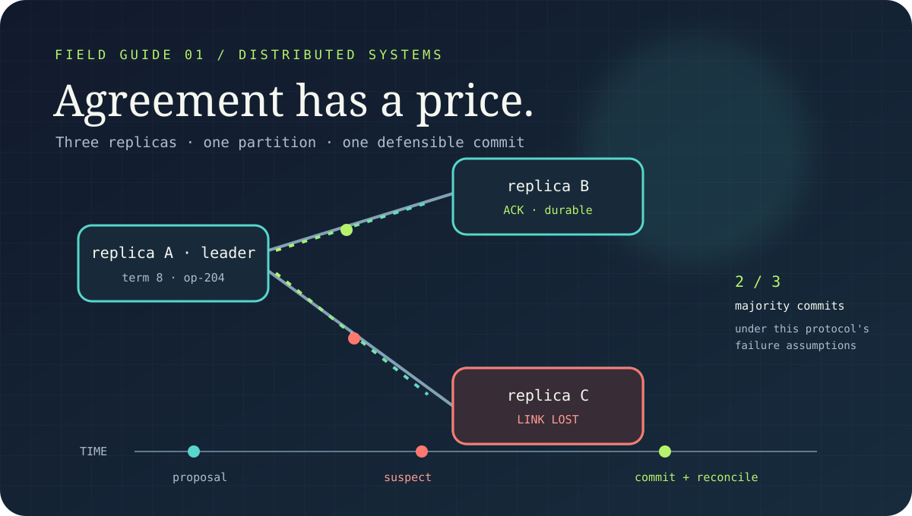

Happened-before, logical clocks, and partial ordering.
Free field guide12 lessonsFailure maps + design drillsMukul
Distributed Systems: Truth Under Failure
A healthy cluster is the least interesting state. This course starts at the first lost reply, asks what each node can actually know, then works backward to a protocol whose promises still hold when the network gets weird.
Method: Every lesson uses the same incident worksheet: observed evidence → invariant at risk → smallest safe recovery. No protocol gets a free pass because its diagram looks tidy.
By Mukul Kumar Mishra · System reliability · 8-hour guided estimate · Updated October 10, 2026

01Write the invariant first
02Mark what is unknown
03Prove the recovery path
After these lessons, you can
- Separate event order from wall-clock order, and distinguish a timeout suspicion from proof of failure.
- Reason about quorum intersection, leader terms, stale owners, and the assumptions behind a linearizable write.
- Make retries safe with idempotency keys, deadlines, bounded budgets, and a reconciliation path.
- Design recovery drills that verify the contract—not just that a process restarted.
The case material below is grounded in linked papers and engineering guidance. Numeric examples are explicitly illustrative; each system’s actual guarantees depend on its configuration.
01 · Incident worksheet · Failure model
The network did not promise to tell you
A caller sends “reserve seat 18.” The server commits it; the reply vanishes. From the caller’s chair, this looks identical to a request the server never received. That ambiguity—not a dramatic machine fire—is the everyday distributed-systems problem.
Start by listing the failure model: process crash or pause, packet loss or delay, partition, duplicate delivery, and storage behavior after power loss. Then write the observable evidence for each. A timeout means “no answer before my deadline,” not “the other process is dead.” Design progress and safety separately: safety says nothing bad happens; liveness says useful work eventually happens under stated conditions.
Drill: For every remote call, write down what the caller knows after a timeout and what it cannot know without a read or reconciliation step.
AWS · Timeouts and retries02 · Causality map · Ordering
Wall clocks do not make a history
Machine A says “09:00:00.100”; machine B says “09:00:00.090.” That does not establish that B’s event happened first. Clock skew, network delay, and independent observation make timestamp sorting a display convenience—not a causal proof.
Lamport’s happened-before relation gives a safer starting point: order events inside one process, connect sends to receives, then take the transitive closure. Some events remain concurrent. If a product needs one displayed winner, define a deterministic tie-breaker; if it needs causal updates, preserve the causal relation instead of pretending timestamps discovered it. Physical clocks can still be useful when their uncertainty is explicit.
Drill: Draw three concurrent updates. Which can commute? Which require a conflict rule?
Lamport · Time, Clocks, and the Ordering of Events03 · Quorum map · Replication
Quorum is an intersection argument
Three replicas, majority quorum two: any two majorities overlap in at least one member. That overlap is why a later read or election can learn about a committed choice in protocols that preserve the relevant log and term rules. The arithmetic is the easy part; the protocol obligations make the overlap meaningful.
Before writing “quorum = safe,” state what is acknowledged: memory or durable media? Which replicas count? Does a new leader have to contain committed entries? Is the read linearizable, or may it return an older value? A two-of-three write is not a universal guarantee independent of implementation, placement, or storage behavior.
Drill: For N=5, calculate majority size and show the smallest possible intersection between two majorities.
Google Research · Spanner paperOngaro & Ousterhout · Raft04 · Term timeline · Consensus
Election chooses a speaker; the log chooses history
Raft makes replicated-log consensus teachable by separating leader election, log replication, and safety. A term is a logical epoch, not a timestamp. When a node hears from a higher term, it steps down; votes and log freshness constrain who may lead. A leader is not allowed to invent a committed past just because it won an election.
Production design must add the edges around the algorithm: how clients find the leader, what acknowledgement means, how snapshots compact history, how partitions affect reads, and how deployment rolls through the cluster. Avoid reducing consensus to “pick the node with the most votes.” The log-matching and commit rules are the safety story.
Drill: Pause one follower for a term, append entries elsewhere, then bring it back. Trace which entries may be overwritten and why.
USENIX · Raft consensus paper05 · Stale-owner incident · Leases
A lease expires in your clock; a fence travels with the write
A worker pauses for a long garbage-collection cycle. Its lease expires. A new worker takes ownership. The old worker wakes up, still convinced it is the owner, and writes. Checking a local lease before the write is not enough: that check may already be stale.
Fencing makes ownership observable at the resource boundary. Give each grant a monotonically increasing token; the storage service remembers the largest accepted token and rejects lower ones. Lease timeouts can help decide when to try a takeover, but the fencing token prevents an old holder from overwriting newer work. If the sink cannot enforce a token or compare-and-swap, document the remaining race.
Drill: Draw a pause between “lease checked” and “write committed.” Put the fencing comparison on the side of the boundary that owns the data.
Kleppmann · Distributed locking and fencing06 · Uncertainty budget · Time
TrueTime is an interval, not a magic clock
Google’s Spanner paper describes a time API that returns an interval enclosing the current time. The uncertainty is part of the contract. For externally consistent commits, Spanner can wait out that uncertainty after assigning a commit timestamp so real-time ordering is respected. The important design idea is not “global clocks solve distributed systems”; it is “make the bound explicit, then pay for the guarantee.”
For your own system, ask where the bound comes from, how it is monitored, what happens if it grows, and which behavior depends on it. A timestamp copied from a wall clock has no such proof attached. Prefer sequence numbers, versions, or causal metadata unless the product truly needs physical-time semantics.
Drill: Name the user-visible promise that would justify waiting for clock uncertainty. If you cannot name one, do not add the coordination tax.
Google Research · Spanner and TrueTime07 · Request ledger · Delivery
“Exactly once” needs a boundary
A message broker can redeliver. A producer can lose the acknowledgement after a successful publish. A consumer can commit its database transaction and crash before saving its offset. Each boundary creates a duplicate window. “Exactly once” is meaningful only when you say exactly once where: broker log, transactional consume-and-produce, or an end-user side effect.
For an ordinary service, a durable idempotency key plus a transaction that stores both the result and key often gives a clearer contract. For database-to-broker publication, a transactional outbox closes the dual-write gap; a relay may still publish more than once, so consumers remain idempotent. Retention, key scope, and replay behavior are part of the API—not implementation trivia.
Drill: Crash after every step in “write order → publish event → acknowledge.” Mark which state must be replay-safe.
AWS · Making retries safe with idempotent APIs08 · Load amplification · Retries
Retries borrow capacity from the future
When a dependency slows, synchronized clients retry together. The retries add load exactly when the service has the least spare capacity. If each layer independently retries three times, a call through four layers can multiply attempts dramatically. Put a deadline around the whole operation; assign a bounded retry budget; use backoff with jitter; and retry only when the operation is safe to repeat.
A timeout should be derived from an end-to-end latency objective and measured downstream percentiles, with room for connection setup where relevant. It should not be copied from a neighboring service. Retries that outlive the caller’s deadline waste work and can deliver a result nobody is waiting to receive.
09 · Reconfiguration review · Membership
Changing the quorum is part of the protocol
Adding a replica is not just a capacity operation. If old and new configurations can each independently elect a leader during a transition, they may accept conflicting histories. Raft’s joint-consensus approach overlaps old and new majorities during membership change. Other systems use different safe reconfiguration techniques; the common lesson is that membership has a consistency model.
Plan the migration as phases: copy data, verify catch-up, establish the transition configuration, move traffic, then retire the old member only after the new quorum can make progress. Watch the slowest replica and disk/network contention; recovery traffic competes with foreground work. A stuck learner is safer than an unsafe promotion.
Drill: For a three-node-to-five-node change, write the old quorum, new quorum, and overlap required during the handoff for your chosen algorithm.
Raft paper · Cluster membership changesAWS · Static stability10 · Contract table · Consistency
Pick the consistency users can explain
Linearizability, serializability, causal consistency, read-your-writes, and eventual convergence are not synonyms. Each answers a different question. A balance debit may need a single atomic order. A profile edit may need read-your-writes. An analytics dashboard may tolerate lag. The cheapest correct system is the one that matches the actual user promise.
Write a short contract with operation, allowed observation, and failure behavior. “Reads may lag by five seconds” is measurable. “Eventually consistent” without a bound or convergence condition is not an operational plan. Model multi-key transactions, stale replicas, and failover explicitly; consistency is a property of the operation path, not the database product label.
Drill: Define the read after a successful write, a read during a partition, and the recovery behavior for one user-critical entity.
Google Research · Spanner and CAP11 · Game-day card · Verification
Test the ambiguity, not just the outage
Kill -9 proves that a process can die. It does not test a delayed response after commit, asymmetric packet loss, a paused process that wakes after lease expiry, or a disk that acknowledges before the intended durability point. Build fault tests around invariants: no double charge, no acknowledged write lost under the stated failure budget, no stale owner accepted.
Keep the experiment bounded and observable. Capture a history of invocation and response times, node terms, applied indexes, and durable state. Compare that history with the promised model. Chaos without a hypothesis creates movement; a failure test with a falsifiable invariant creates evidence.
Drill: Inject “commit succeeds, reply drops.” Run the same logical operation twice and inspect both the user-visible result and durable side effects.
Jepsen · Consistency models12 · Capstone · Design review
Ship a ledger that survives one partition
Design a small account ledger with three replicas across independent failure zones. State the write and read contract. Choose the replication protocol and acknowledgement point. Show what a client sees when the leader commits but the response is lost, when one replica is paused, and when the network splits two-to-one. Include the recovery and membership plan.
Your deliverable is one page: a sequence diagram, an invariant list, a retry/idempotency contract, a failure matrix, and a verification drill. Put every number in a labeled assumptions box. If the guarantee depends on synchronous disk, routing independence, or bounded clock uncertainty, say so where the reviewer can see it.
Review gate: Ask another engineer to find one history your design forbids and one history it permits. If the two answers differ, tighten the contract before adding nodes.
Next: Postgres in Production for the storage boundary, or SRE and Observability for proving that the contract holds under load.
Research shelf · primary and engineering sources
Leader election, log replication, safety, and membership changes.
Globally distributed transactions, external consistency, and TrueTime uncertainty.
Request identity and safe retry semantics.
Deadlines, retry amplification, and jitter.
Pre-provisioned capacity and failure-domain independence.
Examples are teaching models, not claims about a named company’s incident. Protocol properties are summarized from the linked papers; validate against the exact version and configuration you operate.